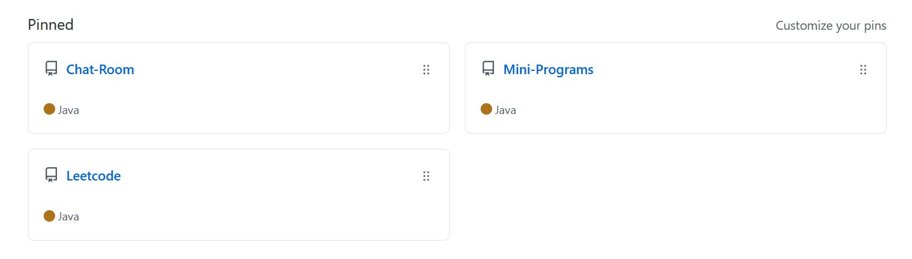

Education
Northeastern University
M.S. Computer Science San Jose, CA Sep 2020 - May 2023
· GPA: 3.85
Purdue University
B.S. Economics West Lafayette, IN Sep 2018 - May 2020
· GPA: 4.0
· Honor: Dennis J. Weidenaar Memorial Scholarship, Dean's List & Semester Honors
China Agricultural University
B.S. Economics Beijing, China Sep 2016 - Jun 2018
Skills
· Programming Languages: Java, SQL, JavaScript, Python
· Technologies: MySQL, Git
· Frameworks: MyBatis, Spring, SpringMVC
· General Skills: Web Development, Object-Oriented Development, Data Structure and Algorithms
Projects
Click here to view projects on GitHub
